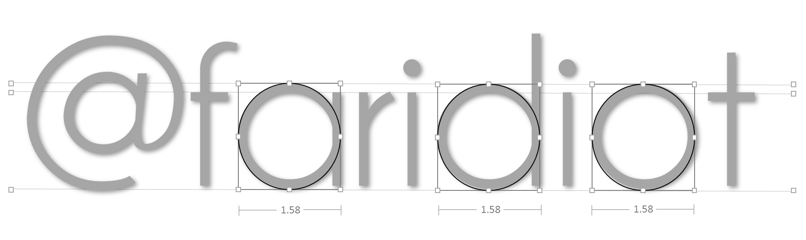

We are responsive-web designer from Yogyakarta, Indonesia. We make web more intuitive and special with annimation effect, full screen (optional), mobile browser friendly, simple, and use standard modern web with HTML5, CSS3, jQuery, and Javascript. No Flash or another thirty plugin. We always build from concept, we not using template, we make web original, we make web futuristic.
We always design with love because we love design.

All web with mark  Labs Experiments in left-bottom page is a experiments project from Jogja +F Web Designer. See our Work. Contact +F Labs to work with us.
Labs Experiments in left-bottom page is a experiments project from Jogja +F Web Designer. See our Work. Contact +F Labs to work with us.
We live in Yogyakarta, Indonesia.
Jl. Wahid Hasyim No. 8, Condongcatur Depok Sleman Yogyakarta, 55683.
Email: farid@faridiot.com Twitter @faridiot
Telp. +6281392541831